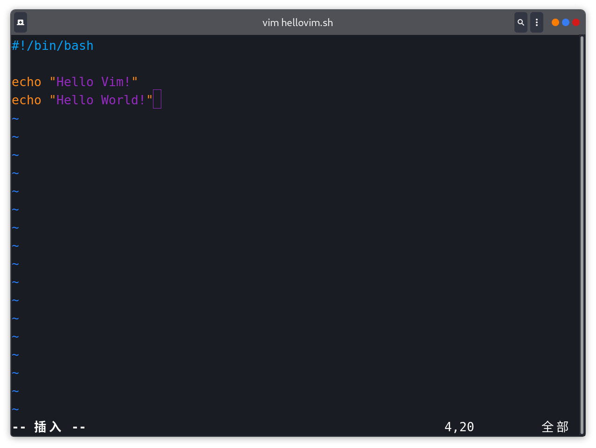

vim笔记
本文最后更新于：2022年11月23日 晚上
概述
vim是一个高门槛(在我看来，可能是我太菜了)的文本编辑器，是由vi升级改良而发展出来的，比vi好用一点了(只是我的第一印象)。
想要熟练地使用vim是一件比较难的事，但是更难的是克服不再使用常用的编辑器，转而使用一个新东西。在一开始，编辑效率会大大下降，但是之后，你会越来越快。
使用方法
- Linux：可以通过包安装，或是像我一样直接使用apt安装
- VS code：安装vim插件并启用即可
- jetbrians IDE：安装idea vim插件并启用即可
- Typora：目前没有办法直接在Typora中使用vim，但是可以用vim打开md文件，并用Typora打开同一文件，在保存后可以预览，但我觉得这有点蠢
vim键盘图
想要流利地使用vim，就要去记键盘图。
中文版

英文版
很多时候，结合英文版的键盘图可以提高记忆的效率。

使用
界面

模式
vim共有3种模式：
- 普通模式(normal mode)
- 插入模式(insert mode)
- 命令模式(command mode)
普通模式
vim的初始模式，在其他模式下按下Esc键返回。在此模式下，通过按下按键来浏览文本或是进入其他模式。
移动光标(浏览)
| 快捷键 | 描述 |
|---|---|
h j k l |
依次替代左 下 上
右 四个方向键 |
w / W |
移动到下一个单词的开头，小写表示以非字母为分割单位，大写表示之以空格作为分割单位 |
e / E |
移动到下一个单词的结尾，大小写区别同上 |
b / B |
动到上一个单词的开头，大小写区别同上 |
f {char} |
在此行从光标开始搜索{char}
字符，按下;跳转到下个字符，按下,跳转到前一个字符(可以到光标之前) |
F{char} |
同f，但是自光标往前搜索 |
0 |
移动到行首 |
$ |
移动到行尾 |
^ |
移动到当前行的第一个非空字符 |
nG |
移动到第n行(n表示一个数字) |
gg |
移动到第一行 |
GG |
移动到最后一行 |
{ |
移动到当前段落的开头 |
} |
移动到当前段落的末尾 |
插入模式
在普通模式下按下i进入，在此模式下，你可以修改文本，进行编辑，同时也可以通过一些快捷键来对文本进行修改。
快捷键
| 快捷键 | 描述 |
|---|---|
ctrl + h |
删除光标前面的字符，类似退格键(Backspace) |
ctrl + w |
删除光标前面的单词 |
ctrl + u |
删除光标前面的该行所有内容 |
命令模式
在普通模式下按下：键后输入命令
常用命令
| 命令 | 描述 |
|---|---|
:quit |
退出vim，可以缩写为:q |
:write |
保存，可以缩写为:w，保存退出可以缩写为:wq |
:n |
移动光标到当前文件的第n行（n表示一个数字），同普通模式下的nG |
注意：在命令之后增加!表示强制，如:q!表示强制退出(若修改后不想保存就可以使用)，:wq!表示强制保存并退出。